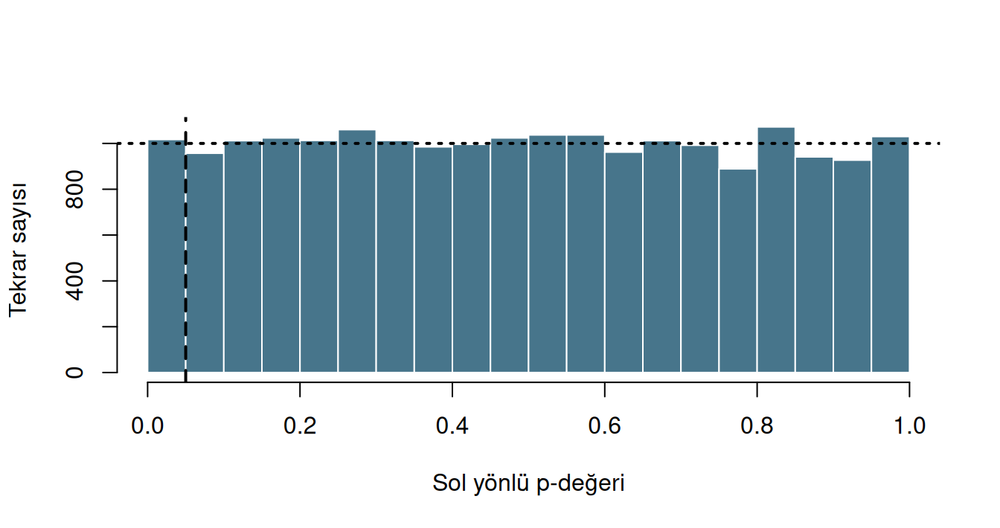

Bir üretici paketlerinin ortalama ağırlığının 500 gram olduğunu bildiriyor. Aynı üretim döneminden rastgele seçilen paketlerin ortalaması 497 gram çıkıyor. Üç gramlık fark, hat ayarının değiştiğini düşündürmeli mi? Paket ağırlıkları çok değişkense, bir sonraki örneklemin ortalaması 500’ün üstüne bile çıkabilir. Aynı fark yüzlerce pakette gözlenirse örnekleme dalgalanmasıyla açıklamak daha güç olabilir. Farkın büyüklüğünü hem örnekleme değişkenliğiyle hem üretim için önemli sayılan gram farkıyla karşılaştırmamız gerekir.
Bölüm 32 bölümünde bir ortalamanın aynı süreçten alınan örnekler boyunca nasıl değiştiğini gördük. Şimdi bunu ters yönde kullanacağız. Üreticinin iddiasını ve örnekleme modelini geçici olarak referans alıp, gözlediğimiz sonucun bu koşullarda ne kadar olağandışı olduğunu hesaplayacağız. Bölüm sonunda okur test yönünü seçebilecek, p-değerinin hangi olasılığı ölçtüğünü açıklayabilecek ve bir test sonucunu etki tahmini, aralık ve tasarım sınırlarıyla birlikte raporlayabilecektir. Örnekleme dağılımı ve güven aralığı kavramları ön bilgimizdir.
34.2 Hangi bilimsel soru, hangi hipotez?
\(\mu\), incelenen dönemin bütün paketlerine ilişkin ortalama ağırlık olsun. Sıfır hipotezi\(H_0\), bu incelemede karşılaştırma için kullanılan iddiadır. Alternatif hipotez\(H_1\), veriden destek aradığımız sapmayı tanımlar. Eksik dolum denetiminde hipotezler şöyle kurulabilir:
\[
H_0:\ \mu=500,\qquad H_1:\ \mu<500.
\]
Bu sol yönlü testte küçük ortalamalar alternatif lehine sayılır. Sürecin 500 gramdan her iki yönde sapması araştırılıyorsa \(H_1:\mu\ne500\) seçilir. Bu çift yönlü soru, 503 gramı da 497 gramı da aynı büyüklükte bir sapma olarak değerlendirir. Bir üst sınırın aşılması araştırılıyorsa sağ yönlü alternatif uygundur. Yön, ağırlıklar görülmeden önce problemin niteliğine göre seçilir. Gözlenen farkın işaretine bakarak olumlu görünen kuyruğu seçmek, baştan yalnız bir kuyruğa izin veren testle aynı hata oranını vermez.
Sıfır hipotezini kullanmak araştırmacının onun doğru olduğuna inandığını göstermez. Bu hipotez, bir test istatistiğinin dağılımını hesaplamak için referanstır (Casella ve Berger 2002). Örneğin amaç “ortalama en az 500 gramdır” iddiasını eksik doluma karşı sınamaksa, \(H_0:\mu\geq500\) de kurulabilir. Aşağıdaki sol kuyruk testinde yanlış ret olasılığı bu kümede en çok 500 sınırında gerçekleşir. Ortalama daha büyükse küçük ortalamalar görmek daha seyrekleşir. Bu yüzden sınırdaki hesap, o bileşik hipotez için de hata kontrolü sağlar.
34.3 Farkı örnekleme ölçeğine taşımak
Paket ağırlıklarını bağımsız normal ölçümler olarak modelleyelim. Süreç standart sapması \(\sigma\) bu öğretim örneğinde biliniyor olsun. Örneklem büyüklüğü \(n\), rassal örneklem ortalaması \(\bar X\) ve sıfır hipotezinin belirlediği ortalama \(\mu_0\) olsun. \(\bar X-\mu_0\) gram cinsinden farktır. Bu farkı, Bölüm 32 bölümündeki standart hata \(\sigma/\sqrt n\) ile ölçekleriz:
\[
Z=\frac{\bar X-\mu_0}{\sigma/\sqrt n}.
\]
\(H_0\) altında payın beklenen değeri sıfır, standart sapması paydada yazan değerdir. Ortalamanın dağılımı normal olduğundan bu oran tam olarak standart normal dağılır. Gözlenen değeri \(z_{\mathrm{obs}}\) ile gösterelim. \(\sigma=12\) gram ve \(n=64\) için standart hata 1,5 gramdır. Gözlenen 497 gram, referans değerin iki standart hata altındadır ve \(z_{\mathrm{obs}}=-2\) çıkar. Aynı gözlenen fark, \(n=16\) için yalnız bir standart hata olurdu. Böylece test istatistiği, farkın yönü ve büyüklüğünün örnekleme ölçeğine göre okunmasını sağlar. Normal model ya da bağımsızlık geçerli değilse standart normal başvurunun dayanağı da yeniden değerlendirilir.
34.4 p-değeri nasıl hesaplanır?
Bir test istatistiğinin gözlenen değeri, tek başına ne kadar sıra dışı olduğunu söylemez. Bunun için sıfır hipotezi altındaki referans dağılımına ve hangi sonuçların en az gözlenen kadar uç sayılacağını belirleyen bir ölçüte ihtiyacımız var. p-değeri, bu model altında, seçilen ölçüte göre gözlenen test istatistiği kadar veya daha uç bir sonuç elde etme olasılığıdır (Casella ve Berger 2002; Wasserstein ve Lazar 2016).
Eksik dolum sorusunda, \(-2\) ile karşılaştırıldığında \(-2{,}5\) daha uçtur. \(+2{,}5\) ise aynı ölçüde büyük bir sapma olsa da eksik dolum yönünde değildir. Sol yönlü p-değeri, standart normal eğrinin \(-2\) ve solundaki alandır:
\[
p_{\mathrm{sol}}=P(Z\leq -2\mid H_0).
\]
Sonuç yaklaşık 0,0228’dir. Sürekli bir dağılımda tam \(-2\) noktasına pozitif olasılık düşmez. Eşiği içeren veya dışlayan ifade aynı alanı verir. Kesikli testlerde ise gözlenen sonuca olasılık kütlesi düşebilir. Bu yüzden eşitliği hesaba katmak önemlidir.
Çift yönlü soruda uçluğu \(|Z|\) ile tanımlayalım. Dikey çizgilerden birinin solunda veya ötekinin sağında kalmak, gözlenen sapma kadar uzak olmaktır:
İkinci eşitlik, bu simetrik referans dağılımında \(-2\)’nin soluyla \(+2\)’nin sağının eşit olmasından gelir. Sonuç yaklaşık 0,0455’tir. İki yönlü hesabı her zaman tek yönlü p-değerini ikiyle çarparak yapamayız. Seçilen tek yön karşı kuyruk olabilir. Asimetrik veya kesikli bir referans dağılımında hangi sonuçların daha uç kabul edildiği farklı biçimde tanımlanabilir; bu nedenle iki taraflı p-değerinin hesabı da değişebilir.
Şekil 34.1: Sıfır hipotezi altındaki standart normal referans. Üst panel sol yönlü p-değerini, alt panel çift yönlü p-değerini gösterir.
Şekil 34.1, 497 gramın iki analizde de aynı değere karşılık geldiğini gösteriyor. Değişen, hangi sonuçların en az onun kadar uç sayıldığıdır. Görsel eksenin dışındaki çok küçük kuyruk alanları da R hesabına dahildir. Alt panelde iki kuyruğun alanı bir araya geldiğinde aynı veri daha büyük bir p-değeri üretir.
34.5 Küçük p-değeri neden ret kararına yol açar?
Bir kalite kontrol kuralı, 500 gramlık bir hatta gereksiz yere alarm vermeyi sınırlamak isteyebilir. Önceden belirlenen anlamlılık düzeyi\(\alpha\), sıfır hipotezi doğruyken yanlış ret olasılığı için hedeflenen üst sınırdır. Küçük p-değerleri, referans modele göre sıradışı bölgelere karşılık gelir. Geçerli bir p-değeriyle bu bölgede kalındığında ret kararı verirsek hata olasılığı aşağıdaki üst sınırı aşmaz. Yaklaşık referans dağılımına dayanan p-değerlerinde kontrol de yaklaşık olabilir:
\[
P_{H_0}(p\leq\alpha)\leq\alpha.
\]
\(P_{H_0}\), referans hipotezi altında hesaplanan olasılığı gösterir. Sol yönlü sürekli normal testte \(p=\Phi(Z)\) olur. \(\Phi\), standart normal birikimli dağılımıdır. \(p\leq\alpha\) olayı, \(Z\) değerinin standart normalin \(\alpha\) kantilinden küçük ya da ona eşit olmasıdır. Bu kantilin solundaki alan tanımı gereği \(\alpha\) olduğundan eşitlik elde edilir. Çift yönlü eş kuyruklu normal testte de iki alan \(\alpha/2\) ve \(\alpha/2\) olarak toplanır. Dolayısıyla tam kalibre edilmiş bu örneklerde sıfır altında p-değerleri 0 ile 1 arasında düzgün dağılır. Kesikli bir testte ret olasılığı basamaklı değişebilir. En yakın izin verilen ret bölgesinin kütlesi \(\alpha\)’dan düşük kalabilir. Bileşik sıfır hipotezinde bu üst sınırın ilgili bütün parametre değerlerinde geçerli olması gerekir (Casella ve Berger 2002).
\(p>\alpha\) ise belirlenen kural sıfır hipotezini reddetmez. Bu durum, veri ve araştırma tasarımının belirli bir farkı saptamak için yeterli olmamasıyla da uyumludur. Reddetmemek, iddianın doğrulandığı veya iki değerin eşdeğer olduğunun gösterildiği anlamına gelmez.
34.5.1 Neden 0,05 kullanılıyor?
Fisher’ın 1925 tarihli Statistical Methods for Research Workers kitabı, normal dağılımda yaklaşık iki standart sapmanın dışındaki toplam alanı %5’e bağlayarak bu değeri kullanışlı bir başvuru noktası olarak yaygınlaştırdı. Fisher’ın anlamlılık testinde gözlenen p-değeri, sıfır hipotezine karşı verinin ne kadar aykırı göründüğünü tartışmanın bir yoluydu. Neyman–Pearson yaklaşımı ise önceden belirlenen alternatifler ve ret bölgeleriyle, uzun dönemde yanlış kararların sıklığını denetleyen kuralları öne çıkardı. Günümüzde p-değerini raporlayıp önceden seçilmiş bir \(\alpha\) ile karşılaştıran uygulamalar iki geleneğin unsurlarını birleştirir. Kanıtın yorumu ve uzun dönem karar kuralı farklı amaçlara hizmet eder (Kennedy-Shaffer 2019).
%5 bir doğa yasası değildir. Güvenlik açısından ağır sonuç doğuran bir kaçırma ile sağlam bir hattı gereksiz durdurmanın maliyetleri farklıdır. Yanlış ret maliyeti yükseldiğinde daha küçük \(\alpha\) seçilebilir. Bu tercih, aynı veri miktarında bazı gerçek sorunları saptamayı zorlaştırabilir. Analizden sonra p-değerine uyacak bir eşik seçmek, baştaki hata kontrolünü değiştirmiş olur. \(p=0{,}049\) ve \(p=0{,}051\) ile 0,05 kuralı farklı kararlar verebilir. Bu iki sayının bilimsel anlamı arasında ani bir sıçrama yoktur. ASA’nın 2016 açıklaması ve 2019 özel sayı değerlendirmesi, araştırma sonuçlarının yalnız bir eşiğe dayandırılmaması gerektiğini vurgular (Wasserstein ve Lazar 2016; Wasserstein vd. 2019).
34.6 Bir p-değerinden hangi yorumlar çıkmaz?
\(p=0{,}03\), sıfır hipotezi ve model varsayımları altında, belirlenen istatistiğin gözlenen kadar veya daha uç değer alma olasılığıdır. “Sıfır hipotezinin yanlış olma olasılığı %97” sonucu, koşulun yönünü tersine çevirir. Bölüm 31 bölümündeki tarama örneğinde pozitif testin hastalık durumundaki olasılığı ile pozitif sonuç verildiğindeki hastalık olasılığı farklıydı. Burada da referans model altında sonuçların olasılığı hesaplanıyor. Hipoteze sonrasal bir olasılık vermek için ayrı bir model ve önsel bilgi gerekir. “Sonucun şans eseri oluşma olasılığı” ifadesi de hangi modelin ve hangi sonuç kümesinin kullanıldığını gizler (Wasserstein ve Lazar 2016).
Küçük p-değeri büyük etkiyi garanti etmez. Standart hata küçükse çok küçük bir gram farkı bile standart hata biriminde büyük görünebilir. Tersine, büyük p-değeri etkinin yokluğunu göstermez. Örneğin az sayıda, çok değişken paketle yapılan bir çalışmada üretim açısından önemli bir azalma da veriyle uyuşabilir. \(p=0{,}001\) ile \(p=0{,}04\) farklı modellerden, tasarımlardan veya örneklem büyüklüklerinden geliyorsa bilimsel önem sırası olarak okunamaz.
Bir p-değeri, örneğin temsiliyetini, terazinin kalibrasyonunu veya ölçümlerin bağımsızlığını denetlemez. Örneğin iki makine farklı vardiyalarda çalışıyorsa, ağırlık farkına makinenin yanı sıra sıcaklık veya malzeme partisi de katkıda bulunabilir. Küçük p-değeri, hangi farkın nedensel olduğunu belirlemez (Wasserstein ve Lazar 2016; Wasserstein vd. 2019).
34.7 Yanlış kararlar ve güç
Sıfır hipotezi doğruyken ret kararı Tip I hata, belirli bir alternatif doğruyken reddetmeme Tip II hata olarak adlandırılır. \(\alpha\) yanlış ret için önceden seçilen üst sınırdır. Gerçek yanlış ret olasılığı testin kalibrasyonuna bağlıdır. \(\beta(\mu)\), gerçek ortalama belirli bir alternatif \(\mu\) iken ret edememe olasılığıdır. \(\mu\) değiştikçe bu sayı değişebilir. Güç, o alternatif altında ret olasılığı, yani \(1-\beta(\mu)\) değeridir (Casella ve Berger 2002).
500 gramlık bir hattı yanlışlıkla durdurmak zaman ve ürün kaybına yol açabilir. Eksik dolum yapan bir hattı durduramamak ise müşteri ve mevzuat açısından maliyetli olabilir. Güç, araştırmadan önce hangi büyüklükte bir farkın makul sıklıkla saptanabileceğini sorgulamamızı sağlar. Aynı testte \(\alpha\)’yı küçültmek ret bölgesini daraltır, böylece aynı alternatif altındaki güç de azalır. Daha büyük \(n\), standart hatayı küçültür ve sabit bir gerçek farkı daha görünür yapar. Yüksek \(\sigma\) bu etkiyi zayıflatır. Önceden doğru seçilmiş bir sol yönlü test yanlış ret bütçesinin tamamını sol kuyruğa ayırdığı için bu yöndeki farkları aynı düzeydeki çift yönlü teste göre daha kolay bulur. Bunun karşılığı, yukarı yöndeki farkları hedeflememesidir.
34.8 R ile hata oranı ve gücü görmek
34.8.1 Simülasyon A · Sıfır hipotezi doğru olduğunda
Üretim ortalaması 500 gram ve standart sapması 12 gram olan normal modelden 20.000 bağımsız 64 paketlik örnek oluşturalım. Her örnekte aynı sol yönlü testi, önceden belirlenmiş \(\alpha=0{,}05\) ile uygulayalım. Teorik ret olasılığı normal kantilin solundaki alandır. Bu değerle benzetimde gözlenen oranı karşılaştıracağız.
set.seed(5601)tekrar <-20000alfa <-0.05kritik_z <-qnorm(alfa)ornek_ortalamalari <-function(mu, n, B) {rowMeans(matrix(rnorm(B * n, mean = mu, sd = sigma), nrow = B))}z_sifir <- (ornek_ortalamalari(mu0, n_ilk, tekrar) - mu0) / shp_sifir <-pnorm(z_sifir)c(gozlenen_tip_I =mean(p_sifir <= alfa),teorik_tip_I =pnorm(kritik_z))
gozlenen_tip_I teorik_tip_I
0.05085 0.05000
hist(p_sifir, breaks =seq(0, 1, by = alfa), col ="#47758B",border ="white", main =NULL,xlab ="Sol yönlü p-değeri", ylab ="Tekrar sayısı")abline(v = alfa, lty =2, lwd =2)abline(h = tekrar * alfa, lty =3, lwd =2)

Şekil 34.2: Tam kalibre edilmiş sürekli normal modelde 20.000 sol yönlü p-değeri. Kesikli düşey çizgi 0,05 eşiği, yatay çizgi eşit genişlikli dilim başına teorik beklenen sayıdır.
Şekil 34.2 üzerinde p-değerleri aralık boyunca yaklaşık eşit dağılır. İlk dilime benzetimlerin %5,085’i düşüyor. Bu, teorik %5 değeriyle uyumlu. Gerçek yanlış ret oranı 0,05 olduğunda 20.000 tekrarlı benzetim oranının Monte Carlo standart hatası yaklaşık 0,0015’tir. Kesikli bir test, yanlış seçilmiş referans veya veriye göre seçilmiş bir analiz bu düzgünlük özelliğini otomatik olarak taşımaz.
34.8.2 Simülasyon B · Gerçek bir azalmayı saptamak
Gerçek ortalama 498,5 gram olsun. Aynı sol yönlü kuralı \(n=25\) ve \(n=100\) için 20.000’er bağımsız örnekle uygulayalım. \(Z\)’nin standartlaştırılmasında hâlâ 500 gramı kullanırız. Ancak veri 498,5 çevresinde üretildiğinden \(Z\)’nin dağılımı artık sıfır merkezli değildir. Kullandığımız standart hata \(h=\sigma/\sqrt n\) için alternatif altındaki merkez \((\mu-\mu_0)/h\), standart sapma ise 1’dir. Ret olasılığı bu yeni eğrinin aynı kritik değerin solunda kalan alanıdır.
Şekil 34.3: Örneklem büyüklüğü 100 iken referans ve 498,5 gram alternatifi altındaki Z dağılımları. Düşey noktalı çizgi ret sınırıdır. Boyalı alan alternatif altındaki güçtür.
Şekil 34.3 üzerinde sınır aynı kalır. Sıfır eğrisinin sol alanı Tip I hata olasılığı, alternatif eğrisinin sol alanı güçtür. Teorik güç 25 pakette yaklaşık %15,39, 100 pakette %34,65 değerindedir. Benzetimde bu oranlar sırasıyla %15,38 ve %34,74 oldu. İkinci tasarım aynı 1,5 gramlık azalmayı daha sık saptar. Yine de üretim gerçekten 498,5 gram civarında olsa bile örneklerin çoğunda ret çıkmaz. Bu örnek, “reddetmedik” ile “azalma yok” ifadelerinin neden farklı olduğunu gösterir.
34.9 Etki, güven aralığı ve pratik önem
Ortalama 499,9 gram, standart sapma 12 gram ve örneklem büyüklüğü 360.000 olsun. Bu ideal bağımsız normal örnekte standart hata 0,02 gram, \(z=-5\) ve çift yönlü p yaklaşık 0,00000057’dir. Tahmin edilen etki ise yalnızca −0,1 gramdır. Aynı modelde fark için %95 aralık yaklaşık −0,139 ile −0,061 gram arasındadır. Üretim açısından bu farkın önemli olup olmadığı, ağırlık toleransına ve yanlış müdahalenin maliyetine bağlıdır. Bir ortalama farkı, tek tek paketlerin tolerans altında kalma sıklığını da kendiliğinden ölçmez.
Bölüm 33 bölümündeki iki taraflı normal aralığı düşünelim. Aynı örnekleme modeli ve aynı standart hata kullanıldığında, gözlenen farkın mutlak değeri kritik değerle standart hatanın çarpımını aşıyorsa \(\mu_0\) kapalı güven aralığının dışındadır. Bu durum \(p<\alpha\) sonucuna ve iki taraflı ret kararına karşılık gelir. Tam eşikte, \(p=\alpha\) olduğunda, \(\mu_0\) kapalı aralığın ucundadır. \(p\leq\alpha\) kuralı eşitlikte de reddettiği için bu sınır kararını belirtmek gerekir. Sürekli modelde eşitlik olayının olasılığı sıfırdır. Bu bağlantı, bir aralığın eşleşen testin reddetmediği değerleri toplayarak kurulabileceğini gösterir (Casella ve Berger 2002).
Farklı yöntemler birbirinin tersi olmayabilir. Örneğin binom oranına ilişkin Wald aralığını bir skor testiyle doğrudan eşleştirmek uygun değildir. Tek yönlü test ile iki taraflı aralık da aynı ret bölgesini kullanmaz. Aralığın asıl yararı, tek bir değere ilişkin kararla yetinmeyip tahminin hangi büyüklükteki etkilerle uyuştuğunu gösterebilmesidir. Bu yorum da model ve kapsama koşullarına bağlıdır.
34.9.1 t çıktısını nasıl okuruz?
Gerçek süreçte standart sapma bilinmediğinde Bölüm 33 bölümündeki t modeline dönebiliriz. Aşağıdaki sekiz paket ağırlığı yapaydır. \(H_0:\mu=500\) için gözlenen t istatistiğini farkı tahmini standart hataya bölerek hesaplıyoruz. Serbestlik derecesi \(n-1\) olur. Sol yönlü ve çift yönlü p-değerlerini önce t dağılımından buluyor, ardından R’nin tek örneklem testiyle karşılaştırıyoruz.
agirlik <-c(487, 490, 493, 496, 498, 500, 504, 508)n_t <-length(agirlik)df <- n_t -1fark <-mean(agirlik) - mu0sh_t <-sd(agirlik) /sqrt(n_t)t_obs <- fark / sh_telle <-c(sol =pt(t_obs, df), cift =2*pt(-abs(t_obs), df))r_sol <-t.test(agirlik, mu = mu0, alternative ="less")r_cift <-t.test(agirlik, mu = mu0, alternative ="two.sided")c(H0_ortalama = mu0, gozlenen_fark = fark, t = t_obs, df = df)
H0_ortalama gozlenen_fark t df
500.000000 -3.000000 -1.206916 7.000000
rbind(Elle = elle, R =c(sol = r_sol$p.value, cift = r_cift$p.value))
sol cift
Elle 0.133331 0.2666619
R 0.133331 0.2666619
Ortalamadaki fark −3 gramdır. Yedi serbestlik derecesiyle t istatistiği yaklaşık −1,207, sol ve çift yönlü p-değerleri sırasıyla 0,1333 ve 0,2667 olur. Çift yönlü %95 aralık 491,12–502,88 gramdır ve 500 gramı içerir. Hesaplanan p-değerleri eşik altında değildir. Bu örnek, aynı −3 gramlık farkın önceki normal modeldekiyle aynı sonuca yol açmasının gerekmediğini gösterir. t.test() burada bağımsız normal ölçümler modelini kullanır. Yönü veya modelin uygunluğunu veriden bağımsız tartışmak araştırmacının görevidir. 5.7’de tek ve iki örneklem karşılaştırmalarını ayrıca geliştireceğiz.
34.10 Bir testten bir araştırma sonucuna
Okura yalnız “anlamlı” etiketi vermek yerine hangi sonucun ölçüldüğünü, nasıl örnek seçildiğini, modelin dayanaklarını, etkiyi kendi biriminde, güven aralığını ve p-değerini birlikte verin. Örneğin ilk 64 paketlik öğretim verisi için, “Süreç ortalaması 497 gram olarak tahmin edildi. Bilinen 12 gram süreç sapması ve bağımsız normal model altında, 500 grama göre fark −3 gram ve iki taraflı %95 aralık yaklaşık −5,94 ile −0,06 gramdır. Çift yönlü p-değeri 0,0455’tir. Üretim açısından değerlendirme, önceden belirlenen tolerans ve ölçüm kalitesine bağlıdır.” Böyle bir rapor, kararın hesabını ve bilimsel kapsamını birlikte gösterir.
Aynı araştırmada çok sayıda ürün, vardiya veya ölçüm kontrol edilirse, sonuçlar arasından yalnızca küçük p-değerlerini seçmek okura uygulanan gerçek prosedürü göstermez. \(m\) bağımsız testin bütün sıfır hipotezleri doğru ve her birinde gerçek Tip I hata olasılığı \(\alpha\) ise, hiçbir yanlış ret olmamasının olasılığı \((1-\alpha)^m\) olur. En az bir yanlış ret olayını \(A\) ile gösterelim. Tümleyeni kullanınca:
\[
P(A)=1-(1-\alpha)^m.
\]
20 bağımsız test için \(1-0{,}95^{20}\) yaklaşık 0,642’dir. Bağımlı testler için çarpım gerekçesi geçerli değildir. Çoklu inceleme planı, hangi ailedeki hata oranının denetleneceğini baştan belirlemelidir. Birden çok model, alt grup veya sonuç denenip yalnız istenen sonucu vereni bildirmek p-hacking örneğidir. Araştırma sorusunun ve analiz planının önceden kaydedilmesi, yapılan karşılaştırmaların açıklanması, ölçümlerin denetlenmesi ve bağımsız tekrarlar, sayısal sonucun değerlendirilmesini sağlar. Keşif sırasında bulunan bir örüntü değerli olabilir. Rapor, bunun keşif olduğunu ve doğrulama için hangi ek verinin gerektiğini açıkça belirtmelidir (Wasserstein ve Lazar 2016; Wasserstein vd. 2019).
34.11 Egzersizler
Kolay. 500 gramlık bir pakette yalnız eksik dolumu araştıran denetim ile her iki yöndeki ayar bozulmasını araştıran denetim için hipotezleri yazın. Test yönü ne zaman belirlenmelidir?
Kolay. Ortalama 497, süreç standart sapması 12 gram olsun. \(n=16\) ve \(n=64\) için standart hatayı ve test istatistiğini bulun. Neden aynı fark iki farklı istatistik verir?
Orta.\(z=-2\) için sol ve çift yönlü p-değerlerini R ile hesaplayın. Her birindeki “daha uç” olayını yazın. Model simetrik olmasaydı hangi adımı yeniden ele alırdınız?
Orta.\(p=0{,}049\) ve \(p=0{,}051\) raporlanan iki araştırmayı düşünün. Önceden belirlenen 0,05 kuralı ne der? Bu iki bulgunun bilimsel önemi hakkında ne söyleyebilirsiniz?
Orta. Hattı yanlışlıkla durdurma ve eksik dolumu gözden kaçırma kararlarını hata türlerine bağlayın. Sabit bir gerçek azalma için daha küçük \(\alpha\) gücü nasıl etkiler?
Orta. Yapay sekiz paketin t istatistiğinden \(P(T\leq t_{\mathrm{obs}})\) değerini bulun. Sonuç 500 gramlık ortalamanın doğrulandığını gösterir mi?
Zor. Gerçek ortalama 498,5 gram, \(\sigma=12\) ve \(n=100\) iken sol yönlü testin gücünü bulun. Aynı testte gerçek ortalama 500 olursa ret oranı neyi ölçer?
Zor. Bütün sıfır hipotezleri doğru olan 20 bağımsız test için en az bir yanlış ret olasılığını hesaplayın. Her testin ayrı ayrı %5 olmasıyla bu sonuç çelişir mi?
Zor. 64 paketlik örnekte gözlenen −3 gram farkı, çift yönlü p-değeri ve karşılık gelen %95 aralıkla iki veya üç cümlede raporlayın. Ölçümün sistematik olarak düşük yapılması ve farkın tolerans açısından yorumu hakkında birer sınırlılık ekleyin.
34.12 Egzersiz çözümleri
1. Eksik dolum için \(H_0:\mu=500\), \(H_1:\mu<500\). Her iki sapma önemliyse alternatif \(H_1:\mu\ne500\) olur. Yön, ölçüm sonucunun işaretinden seçilirse önceden belirlenmiş hata hesabı değişir.
2. Standart hatalar 3 ve 1,5 gramdır. Aynı −3 gramlık fark sırasıyla \(z=-1\) ve \(z=-2\) verir. Büyük örneklemde ortalamanın örnekleme ölçeği daha küçük olduğundan fark göreli olarak daha büyüktür.
3.pnorm(-2) yaklaşık 0,02275, 2 * pnorm(-2) yaklaşık 0,04550 verir. İlk olay −2 ve solundaki değerleri, ikinci olay buna ek olarak +2 ve sağını kapsar. Referans simetrik olmasaydı uç sonuç kümesini ve kütlelerini doğrudan hesaplamak gerekirdi.
4. İlkinde ret, ikincisinde reddetmeme kararı verilir. Birincisinin çok daha önemli bir etki gösterdiği sonucu çıkmaz. Etki tahminleri, aralıklar, model varsayımları ve karar maliyetleri karşılaştırılmalıdır.
5. 500 gramlık hattı gereksiz durdurmak Tip I, gerçek azalmayı kaçırmak Tip II hatadır. Sabit örneklemde ve aynı alternatifte \(\alpha\) küçülürse ret bölgesi daralır. Böylece yanlış alarm olasılığı azalabilir, ancak gücün de azalması beklenir.
6. Veride \(t_{\mathrm{obs}}\) yaklaşık −1,207, serbestlik derecesi 7’dir. Sol t kuyruğu yaklaşık 0,1333’tür. %5 kuralında ret çıkmaz. Küçük ve değişken bir örneklemde gerçek bir farkın da saptanamamış olabileceği göz önünde tutulur.
7. Standart hata 1,2 gramdır. Alternatif altındaki \(Z\) merkezi −1,25 olur. Ret sınırı yaklaşık −1,645 olduğundan güç pnorm(qnorm(0.05) + 1.25), yaklaşık 0,346’dır. Gerçekte 500 gram varsa ret bir yanlış alarmdır ve olasılığı 0,05’tir.
8. Bütün testlerin doğru kararla sonuçlanması olasılığı \(0{,}95^{20}\) olur. En az bir yanlış ret bunun tümleyeni, yaklaşık 0,642’dir. Test başına hata ile bütün ailede herhangi bir hata farklı olaylardır. Çarpım ancak verilen bağımsızlık koşuluyla geçerlidir.
9. “Örnek ortalaması 497 gram, 500 grama göre tahmini fark −3 gramdır. Bağımsız normal model ve bilinen standart sapmayla çift yönlü p-değeri 0,0455, fark için %95 güven aralığı yaklaşık −5,94 ile −0,06 gramdır.” Bu aralık terazi sistematik olarak düşük ölçüyorsa bu yanlılığı düzeltmez. Farkın pratik önemi önceden tanımlanmış toleransla değerlendirilmelidir.
34.13 Bölüm özeti
Bir test, hangi sonuçların daha uç sayılacağını belirleyen araştırma sorusuna uygun bir ölçüt ve sıfır hipotezi altında bir referans dağılımı gerektirir. p-değeri bu referansta gözlenen kadar veya daha uç sonuçların olasılığıdır. Önceden seçilen eşik, yanlış ret riski ile belirli alternatifleri saptama gücü arasında bir tercih oluşturur. Bilimsel yorum, kararın yanında etkinin büyüklüğünü, belirsizliğini ve araştırma tasarımını da taşır.
Casella, George, ve Roger L. Berger. 2002. Statistical Inference. 2. bs. Duxbury/Thomson Learning.
Kennedy-Shaffer, Lee. 2019. “Before p < 0.05 to Beyond p < 0.05: Using History to Contextualize p-Values and Significance Testing”. The American Statistician 73 (sup1): 82-90. https://doi.org/10.1080/00031305.2018.1537891.
Wasserstein, Ronald L., ve Nicole A. Lazar. 2016. “The ASA Statement on p-Values: Context, Process, and Purpose”. The American Statistician 70 (2): 129-33. https://doi.org/10.1080/00031305.2016.1154108.
Wasserstein, Ronald L., Allen L. Schirm, ve Nicole A. Lazar. 2019. “Moving to a World Beyond p < 0.05”. The American Statistician 73 (sup1): 1-19. https://doi.org/10.1080/00031305.2019.1583913.